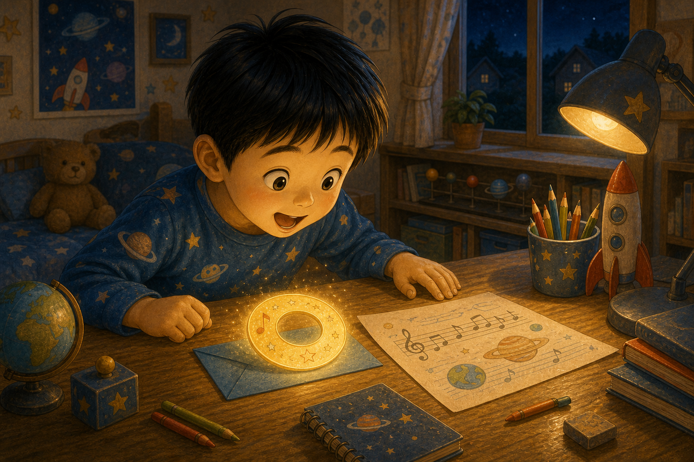
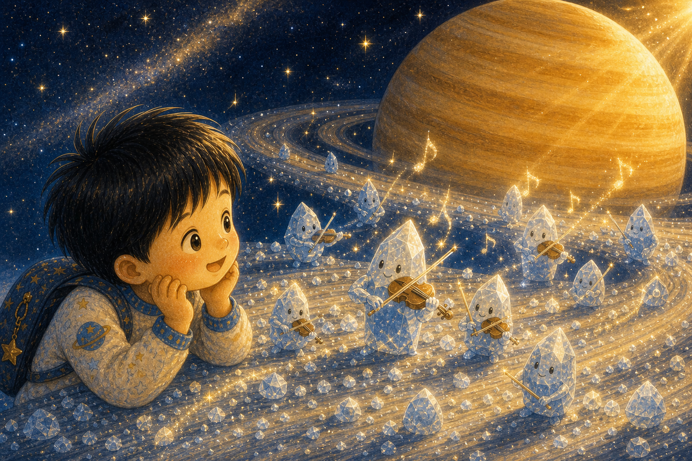
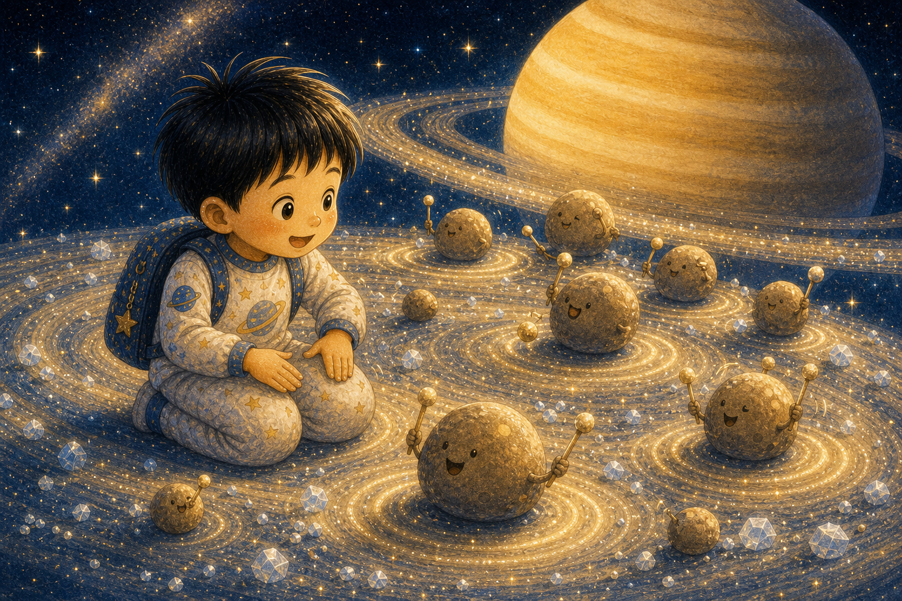
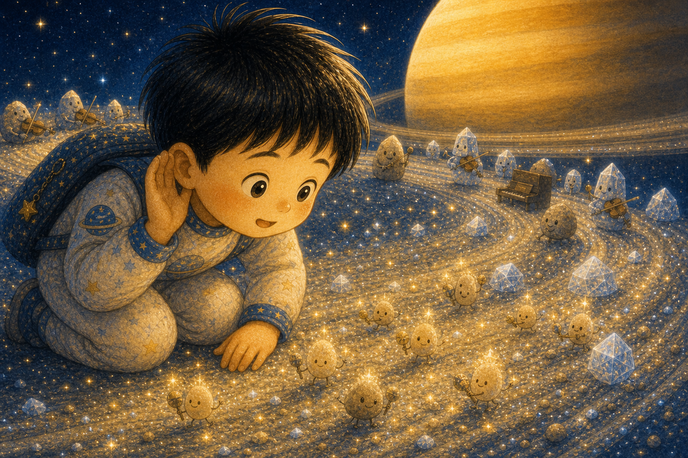
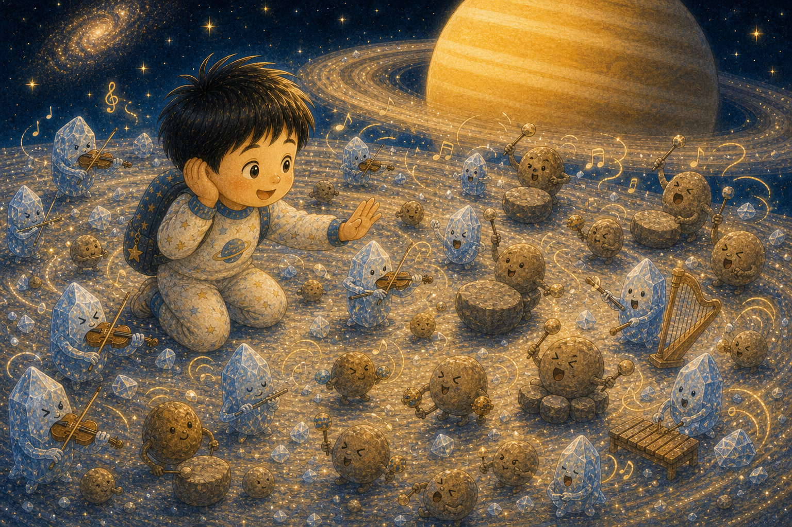
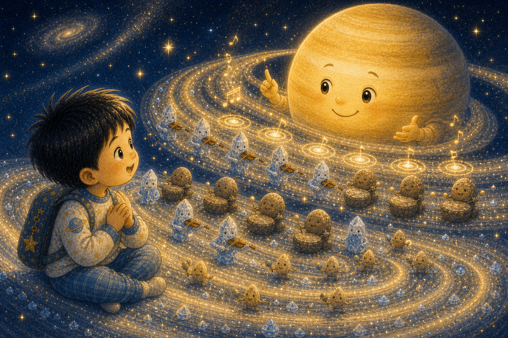
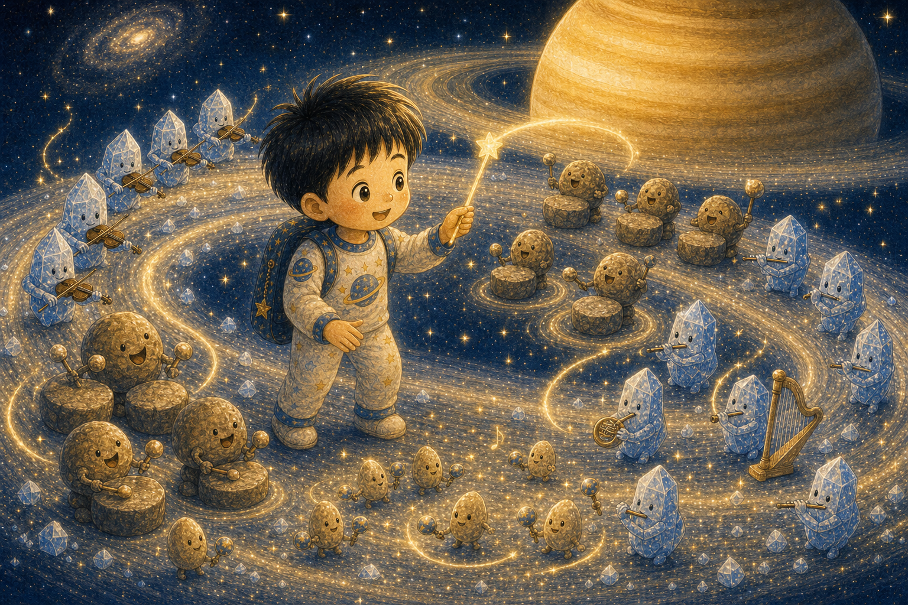
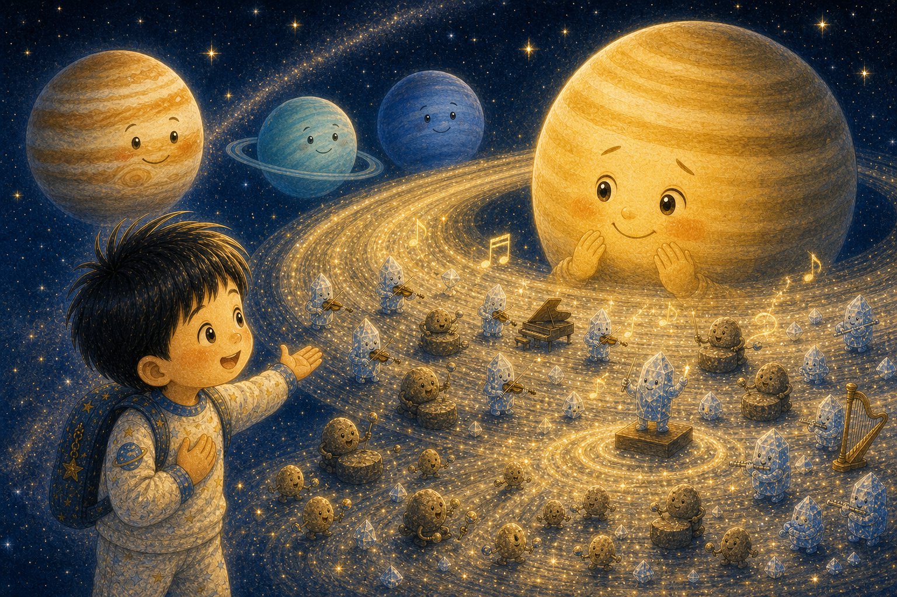
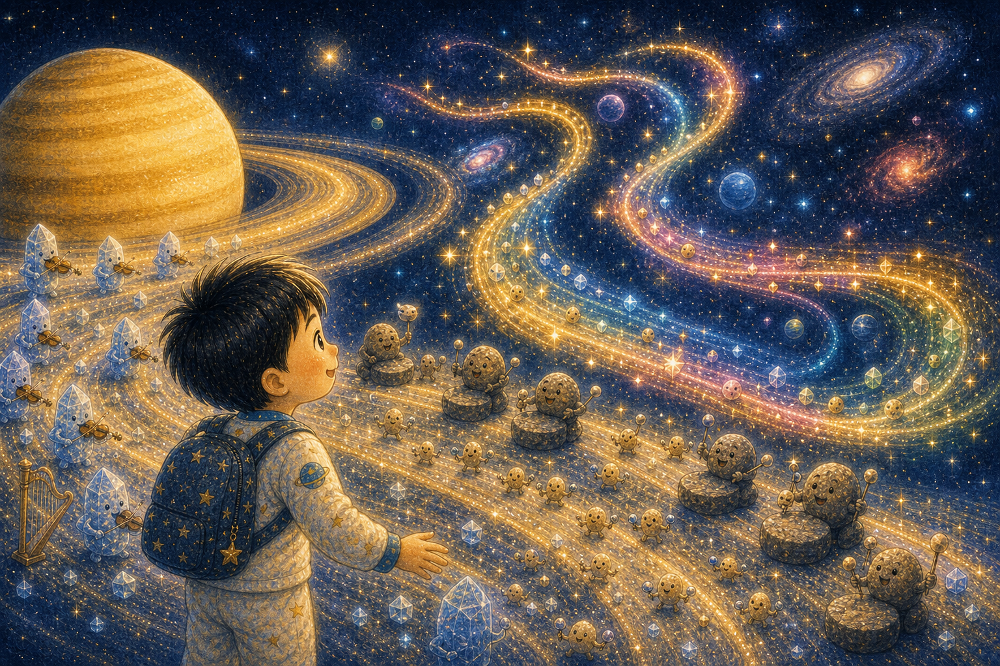
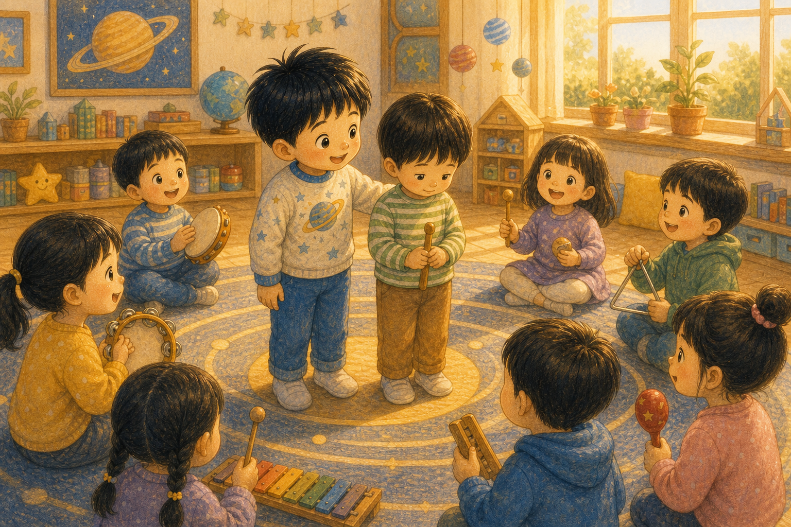

반짝 고리 초대장
하늘이는 책상 위에서 고리 모양 초대장을 발견했어요. 초대장에는 "토성의 고리 음악회에 와 주세요"라고 적혀 있었지요.
하늘이는 우주 악보를 들고 출발했어요.

하늘이는 책상 위에서 고리 모양 초대장을 발견했어요. 초대장에는 "토성의 고리 음악회에 와 주세요"라고 적혀 있었지요.
하늘이는 우주 악보를 들고 출발했어요.

토성의 고리에는 작은 얼음 조각들이 반짝였어요. 얼음 조각은 딩딩, 맑은 바이올린 소리를 냈답니다.
작은 조각도 예쁜 소리를 낼 수 있어요.

둥근 돌멩이들은 통통 북소리를 냈어요. 하늘이는 손바닥으로 무릎을 두드리며 박자를 맞추었지요.
다른 소리가 리듬을 만들었어요.

먼지 알갱이들은 사각사각 작은 쉐이커가 되었어요. 너무 작아서 잘 안 들렸지만, 없으면 허전한 소리였답니다.
작은 목소리도 음악의 한 부분이에요.

처음에는 모두 제멋대로 소리를 냈어요. 하늘이는 귀를 막았다가 웃으며 말했지요. "우리 서로 들어 보자!"
함께하려면 먼저 들어야 해요.

토성은 고리를 천천히 돌리며 박자를 보여 주었어요. 딩딩, 통통, 사각사각 소리가 조금씩 자리를 찾았답니다.
천천히 맞추면 마음도 맞춰져요.

하늘이는 별빛 지휘봉을 들었어요. 큰 소리와 작은 소리를 번갈아 부르자 고리 음악이 더 풍성해졌지요.
모두가 주인공이 되는 순서가 있었어요.

목성, 천왕성, 해왕성도 멀리서 음악을 들으러 왔어요. 토성은 부끄러웠지만 고리를 자랑스럽게 펼쳤답니다.
자기만의 모습을 보여 주는 건 멋진 일이에요.

고리 음악은 우주 먼 곳까지 퍼졌어요. 하늘이는 소리들이 서로 달라서 더 반짝인다는 걸 알게 되었지요.
다름이 모이면 더 아름다운 노래가 돼요.

아침에 깬 하늘이는 친구들과 노래를 부를 때 작은 목소리도 기다려 주기로 했어요. 토성의 고리처럼 모두를 담고 싶었거든요.
그날 하늘이의 교실에도 작은 음악회가 열렸답니다.